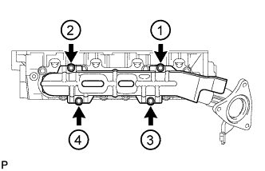
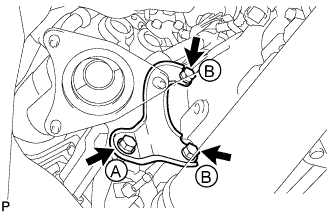
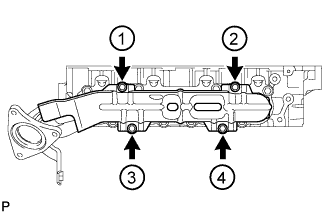
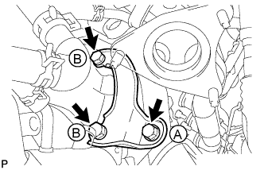
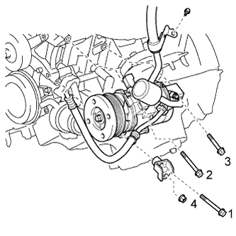

EXHAUST MANIFOLD (w/o Secondary Air Injection System) > INSTALLATION |
| 1. INSTALL EXHAUST MANIFOLD SUB-ASSEMBLY LH |
 |
Place a new gasket on the cylinder head with the "L" mark facing the manifold side.
 |
Temporarily install the exhaust manifold with 8 new nuts, and then uniformly tighten the nuts in several steps, in the sequence shown in the illustration.
| 2. INSTALL NO. 2 EXHAUST MANIFOLD HEAT INSULATOR |
Temporarily install the heat insulator with the 4 bolts.
 |
Uniformly tighten the 4 bolts in several steps, in the sequence shown in the illustration.
| 3. INSTALL NO. 2 MANIFOLD STAY |
 |
Install the manifold stay with the 3 bolts.
| 4. INSTALL EXHAUST MANIFOLD SUB-ASSEMBLY RH |
 |
Place a new gasket on the cylinder head with the "R" mark facing the manifold side.
 |
Temporarily install the exhaust manifold with 8 new nuts, and then uniformly tighten the nuts in several steps, in the sequence shown in the illustration.
| 5. INSTALL NO. 1 EXHAUST MANIFOLD HEAT INSULATOR |
Temporarily install the heat insulator with the 4 bolts.
 |
Uniformly tighten the 4 bolts in several steps, in the sequence shown in the illustration.
| 6. INSTALL NO. 1 MANIFOLD STAY |
 |
Install the manifold stay with the 3 bolts.
| 7. INSTALL FRONT NO. 2 EXHAUST PIPE ASSEMBLY |
Install a new gasket and the front No. 2 exhaust pipe to the exhaust manifold LH with 3 new nuts.
Connect the air fuel ratio sensor connector.
Connect the heated oxygen sensor connector.
| 8. INSTALL FRONT EXHAUST PIPE ASSEMBLY |
Install a new gasket and the front exhaust pipe to the exhaust manifold with 3 new nuts.
Connect the air fuel ratio sensor connector.
Connect the heated oxygen sensor connector.
Attach the heated oxygen sensor wire clamp.
| 9. INSTALL CENTER EXHAUST PIPE ASSEMBLY |
Install the center exhaust pipe to the 3 exhaust pipe supports.
Install 2 new gaskets to the front exhaust pipe and front No. 2 exhaust pipe.
Install the 4 bolts.
| 10. INSTALL TAILPIPE ASSEMBLY |
Install the tailpipe to the 2 exhaust pipe supports.
Install a new gasket to the center exhaust pipe.
 |
Connect the tailpipe and center exhaust pipe with a new clamp.
| 11. INSTALL NO. 2 ENGINE UNDER COVER |
 |
Install the No. 2 engine under cover with the 2 bolts.
| 12. INSTALL ENGINE OIL LEVEL DIPSTICK GUIDE |
 |
Apply a light coat of engine oil to a new O-ring.
Install a new O-ring to the guide.
Install the dipstick guide with the bolt.
Install the dipstick.
| 13. CONNECT COOLER COMPRESSOR |
 |
Connect the compressor. Then install it and the No. 1 compressor stay with the nut and 3 bolts.
Install the cooler refrigerant suction hose with the bolt.
Connect the connector.
| 14. INSPECT FOR EXHAUST GAS LEAK |
| 15. INSTALL FRONT FENDER APRON SEAL LH |
 |
Install the fender apron seal with the 4 clips.
| 16. INSTALL FRONT FENDER APRON SEAL LH (w/ KDSS) |
 |
Install the fender apron seal with the 3 clips.
| 17. INSTALL FRONT FENDER APRON SEAL REAR LH |
 |
Install the fender apron seal with the 4 clips.
| 18. INSTALL FRONT FENDER APRON SEAL FRONT RH |
 |
Install the fender apron seal with the 3 clips.
| 19. INSTALL FRONT FENDER APRON SEAL REAR RH |
 |
Install the fender apron seal with the 4 clips.